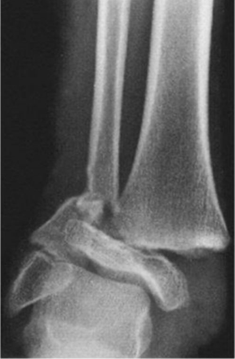
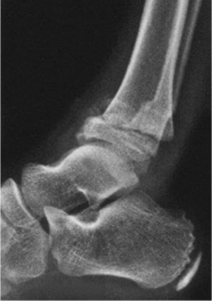
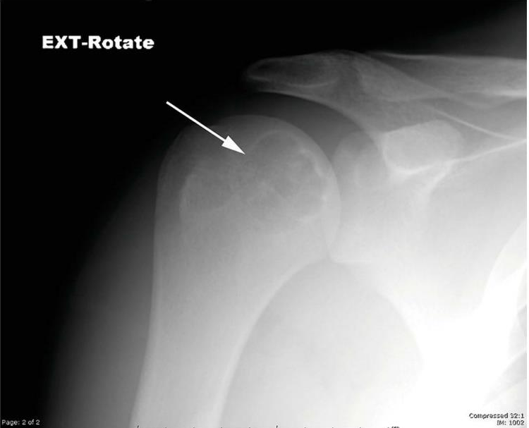

OrtoQuestões
1/3
Inspeção de bagagemPORTÃO 15 · ORTOPEDIA
Algo suspeito nesta bagagem.
Paciente de 15 anos, dor no ombro.
O scanner já encontrou. E você?
Item retido para inspeção
SCANNER 03
TARO
Questão TARO 2024Próximo story: a imagem


Tornozelo de criança, AP e perfil. Qual o mecanismo?
DIAS-TACHDJIAN · qual o mecanismo?
Resposta
Fíbula com traço transverso e o fragmento de Thurston-Holland do lado lateral.
Paciente de 15 anos, dor no ombro.
O scanner já encontrou. E você?

Qual a principal hipótese?